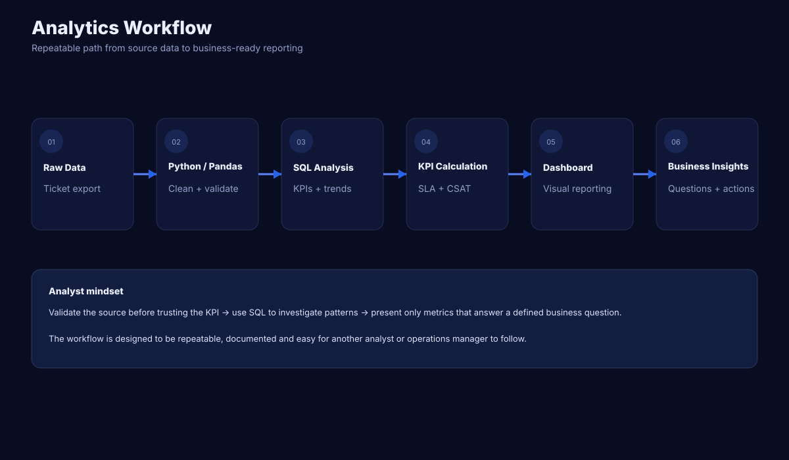
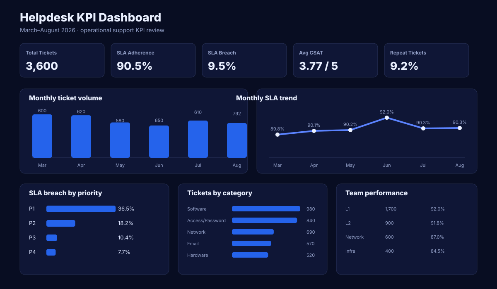
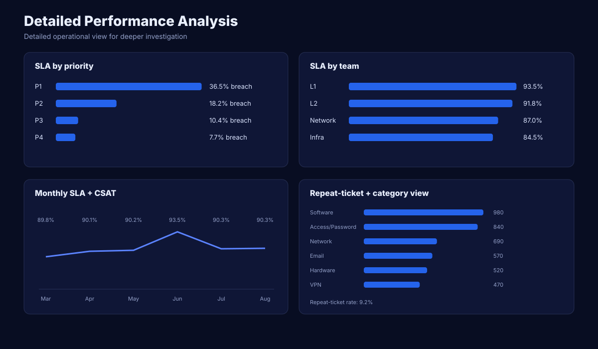
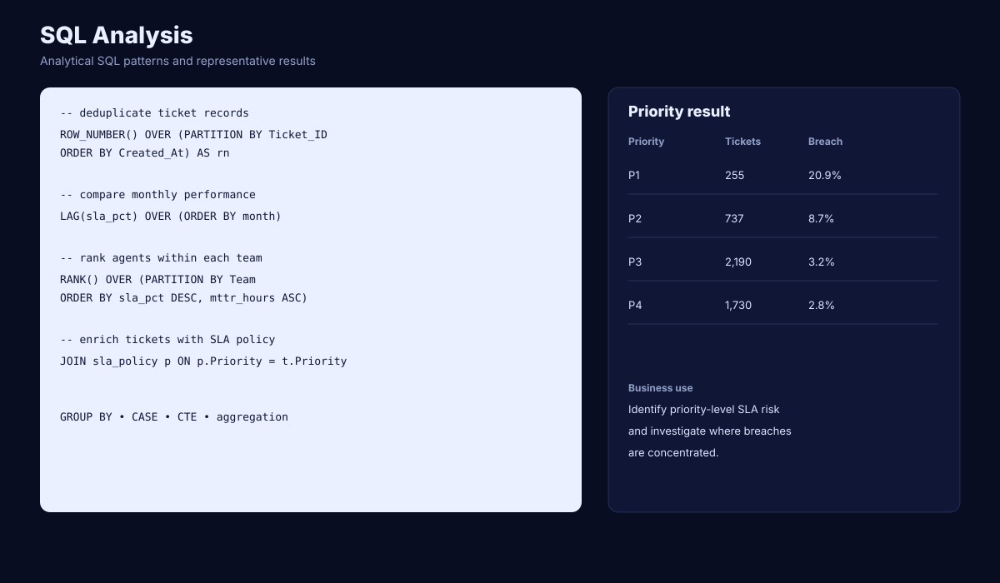

Helpdesk Ticket KPI Dashboard
An end-to-end analytics project that takes a helpdesk ticket export through cleaning, validation, SQL analysis and dashboard reporting.
Dataset disclosure: This project uses synthetic demonstration data. The SLA, CSAT, repeat-ticket and data-quality figures are project outputs, not results from a real employer or customer environment.
Business question
How can a support team turn a messy ticket export into reliable operational KPIs that reveal SLA performance, customer satisfaction, repeat tickets and priority-level patterns?
Analytics workflow

Used a synthetic helpdesk-style export covering March–August 2026 with 3,672 raw rows, 3,600 unique tickets and documented data-quality issues.
Used Python and Pandas to remove duplicate records, handle blank category/agent values and check date fields. The cleaned dataset contains 3,600 unique tickets.
Used SQL for deduplication with ROW_NUMBER, SLA-policy JOINs, monthly trend analysis with LAG, and agent ranking within teams using RANK.
Calculated SLA adherence, SLA breach rates, average CSAT and repeat-ticket rate, then presented the results through Streamlit and a Power BI report.
Data cleaning & validation
Issues identified
- 72 duplicate ticket rows
- 66 blank Category values
- 43 blank Agent values
- Date fields checked
- Priority / SLA fields validated
Quality outcome
Duplicate removal + field checks
The project uses a synthetic demonstration dataset so the full analytics workflow can be shared without exposing real customer or company data.
The raw export contains controlled data-quality issues so the project demonstrates the part of analytics work that happens before a dashboard is built.
- Duplicates: identified repeated ticket records and reduced 3,672 raw rows to 3,600 unique tickets.
- Missing values: checked blank Category and Agent fields and applied the documented cleaning approach.
- Date validation: checked Created_At and Resolved_At fields before using resolution-time and SLA metrics.
- Consistency checks: reviewed status, priority, SLA and resolution fields before KPI calculation.
KPI dashboard

Detailed performance analysis

Key findings
- SLA adherence: 90.5%, with 9.5% of resolved/closed tickets breaching SLA.
- P1 SLA breach rate: 36.5%, compared with 7.7% for P4 in this dataset.
- Average CSAT: 3.77/5.
- Repeat-ticket rate: 9.2%.
- Source-data quality checks: 95.1% after accounting for duplicate and controlled missing-field issues.
KPI definitions
SLA adherence: share of cleaned tickets resolved within the applicable SLA target.
SLA breach rate: share of tickets whose resolution exceeded the SLA target.
Average CSAT: mean customer satisfaction score across available CSAT values.
Repeat-ticket rate: share of tickets marked as repeat cases.
Resolution time: elapsed time between ticket creation and resolution, used alongside the SLA target for service-level analysis.
SQL analysis

The SQL layer focuses on practical analyst tasks rather than simply displaying totals. It includes:
- ROW_NUMBER() for identifying duplicate ticket records.
- JOINs to connect tickets with SLA policy information.
- GROUP BY aggregations for KPI and monthly reporting.
- LAG() for comparing monthly trends.
- RANK() for ranking agents within teams.
Power BI & semantic model
The BI layer is documented separately to keep this case study focused and readable. It covers the semantic model, table relationships, reusable measures, report-page design and data-quality controls.
View Power BI model & reporting →BI validation & monitoring
The reporting layer includes practical controls to reduce the risk of publishing misleading KPIs.
Ticket counts, resolved tickets, SLA adherence, resolution time, CSAT, repeat rate and escalation rate can be checked against the SQL baseline.
Ticket IDs, timestamps, priority, channel, SLA, status and CSAT values are validated before reporting.
Raw rows, curated rows, duplicates, rejected records and quality status are exposed for review.
Clear fact-table grain, reusable measures, dimension-based filtering and SQL reconciliation keep the model practical.
Scope: These are implemented/documented portfolio controls. No production Power BI gateway, scheduled refresh service or alerting infrastructure is claimed.
View BI validation & monitoring →View data dictionary →Dashboard design
The reporting layer is designed around questions a support or operations team could ask during a KPI review:
- Are tickets being resolved within SLA?
- Which priorities show higher breach rates?
- How is performance changing month to month?
- What does customer satisfaction look like?
- How frequently are repeat tickets occurring?
The project uses Streamlit for the interactive Python dashboard and includes a Power BI reporting layer for BI-style visualization.
Analyst workflow
Step 1 — Understand the data: reviewed the ticket fields, business definitions and reporting requirements before analysis.
Step 2 — Profile data quality: checked duplicates, missing values, dates, status fields and KPI inputs to identify issues that could affect reporting.
Step 3 — Clean and validate: used Python and Pandas to prepare the dataset and validate the cleaned output before analysis.
Step 4 — Analyze with SQL: wrote reusable queries for deduplication, SLA analysis, monthly trends, joins and team-level rankings.
Step 5 — Define KPIs: translated operational questions into measurable metrics such as SLA adherence, breach rate, CSAT and repeat-ticket rate.
Step 6 — Build the reporting layer: presented the results through an interactive Streamlit dashboard and Power BI reporting view.
Step 7 — Communicate insights: organized the output around questions that a support or operations team could use during a performance review.
Business insights
The analysis highlights how KPI reporting can move beyond simple totals. In this dataset, higher-priority tickets show a different SLA breach pattern than lower-priority tickets, while monthly and team-level views provide additional context for investigating operational performance.
The purpose of the analysis is to demonstrate how an analyst can identify patterns, validate the underlying data, and turn those patterns into questions for further investigation rather than treating a single KPI as the complete story.
What this project demonstrates
- Taking raw operational data through a repeatable cleaning workflow.
- Writing SQL for deduplication, joins, trends and rankings.
- Using Python/Pandas for validation and transformation.
- Defining KPIs clearly before presenting them.
- Turning analytical output into a business-readable dashboard.
- Documenting KPI definitions, validation steps and analytical assumptions.
Technical stack
Project structure
clean_tickets.py — cleaning and validation pipeline
sql_analysis.sql — KPI and analytical queries
app.py — Streamlit dashboard
generate_dataset.py — reproducible data preparation script
data_dictionary.md — field definitions and documentation
SQL techniques, shown running
The case study above uses ROW_NUMBER for de-duplication, LAG for monthly trends and RANK within groups. The helpdesk CSV is hosted on GitHub and was not available when this section was built, so the same three techniques are shown running on the Executive Operations dataset in this portfolio. The syntax carries over to the helpdesk tables; the results below are from the Executive dataset, not from helpdesk tickets.
exec dedupe row number
-- Technique: de-duplicate with ROW_NUMBER (keep the first row per Record_ID)
WITH ranked AS (
SELECT Record_ID,
ROW_NUMBER() OVER (PARTITION BY Record_ID ORDER BY Created_Date) AS rn
FROM exec_raw
)
SELECT COUNT(*) AS raw_rows,
SUM(rn = 1) AS unique_records,
SUM(rn > 1) AS duplicates_removed
FROM ranked;| raw_rows | unique_records | duplicates_removed |
|---|---|---|
| 6060 | 6000 | 60 |
exec monthly overdue lag
-- Technique: month-over-month change with LAG
WITH m AS (
SELECT Month,
ROUND(100.0 * SUM(Overdue_Flag = 'Yes') / COUNT(*), 1) AS overdue_pct
FROM exec_ops
GROUP BY Month
)
SELECT Month,
overdue_pct,
ROUND(overdue_pct - LAG(overdue_pct) OVER (ORDER BY Month), 1) AS change_vs_prev_month
FROM m
ORDER BY Month;| Month | overdue_pct | change_vs_prev_month |
|---|---|---|
| 2026-01 | 7.5 | — |
| 2026-02 | 8.5 | 1.0 |
| 2026-03 | 7.7 | -0.8 |
| 2026-04 | 7.8 | 0.1 |
| 2026-05 | 7.0 | -0.8 |
| 2026-06 | 7.8 | 0.8 |
| 2026-07 | 11.9 | 4.1 |
| 2026-08 | 16.6 | 4.7 |
| 2026-09 | 14.2 | -2.4 |
exec top categories in team
-- Technique: rank within a group with RANK (top 2 categories by overdue count per team)
WITH c AS (
SELECT Team, Category,
COUNT(*) AS records,
SUM(Overdue_Flag = 'Yes') AS overdue
FROM exec_ops
GROUP BY Team, Category
), r AS (
SELECT *, RANK() OVER (PARTITION BY Team ORDER BY overdue DESC) AS overdue_rank
FROM c
)
SELECT Team, Category, records, overdue, overdue_rank
FROM r
WHERE overdue_rank <= 2
ORDER BY Team, overdue_rank;| Team | Category | records | overdue | overdue_rank |
|---|---|---|---|---|
| Back Office | Data Cleanup | 275 | 35 | 1 |
| Back Office | Documentation | 119 | 15 | 2 |
| Back Office | KPI Reporting | 146 | 15 | 2 |
| Customer Success | Client Review | 359 | 27 | 1 |
| Customer Success | Issue Follow-up | 258 | 26 | 2 |
| Network | Vendor Coordination | 246 | 30 | 1 |
| Network | Access Review | 277 | 29 | 2 |
| Operations | Vendor Coordination | 217 | 26 | 1 |
| Operations | KPI Reporting | 265 | 25 | 2 |
| Quality | Process Update | 238 | 34 | 1 |
| Quality | Documentation | 241 | 24 | 2 |